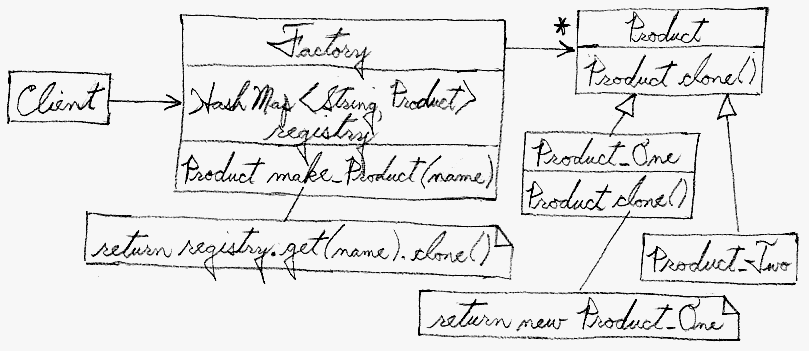
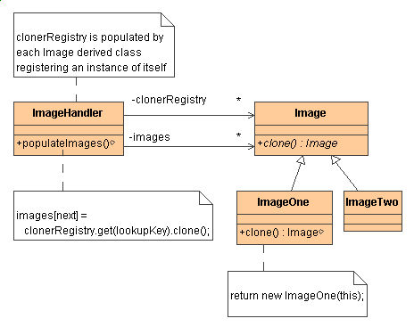
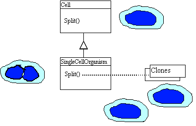

Prototype
Intent
- Specify the kinds of objects to create using a prototypical instance,
and create new objects by copying this prototype. [GoF, p117]
- Co-opt one instance of a class for use as a breeder of all future
instances. [Amsterdam, p26]
- The
new operator considered harmful.
Problem
Application "hard wires" the class of object to create in each
"new" expression.
Discussion
Declare an abstract base class that specifies a pure virtual "clone"
method, and, maintains a dictionary of all "cloneable" concrete derived
classes. Any class that needs a "polymorphic constructor" capability:
derives itself from the abstract base class, registers its prototypical
instance, and implements the clone() operation.
The client then, instead of writing code that invokes the "new"
operator on a hard-wired class name, calls a "clone" operation on the
abstract base class, supplying a string or enumerated data type that
designates the particular concrete derived class desired.
Structure

The Factory knows how to find the correct Prototype, and each Product
knows how to spawn new instances of itself.

Example
The Prototype pattern specifies the kind of objects to create using a
prototypical instance. Prototypes of new products are often built
prior to full production, but in this example, the prototype is passive
and does not participate in copying itself. The mitotic division of a
cell - resulting in two identical cells - is an example of a prototype
that plays an active role in copying itself and thus, demonstrates the
Prototype pattern. When a cell splits, two cells of identical genotvpe
result. In other words, the cell clones itself. [Michael Duell,
"Non-software examples of software design patterns", Object
Magazine, Jul 97, p54]

Check list
- Add a
clone() method to the existing "product" hierarchy.
- Design a "registry" that maintains a cache of prototypical objects.
The registry could be encapsulated in a new
Factory class,
or in the base class of the "product" hierarchy.
- Design a factory method that: may (or may not) accept arguments,
finds the correct prototype object, calls
clone() on that
object, and returns the result.
- The client replaces all references to the
new
operator with calls to the factory method.
Before and after
| Before | | After |
|---|
// The architect has done an admirable job of
// decoupling the client from Stooge concrete
// derived classes, and, exercising polymorphism.
// But there remains coupling where instances are
// actually created.
class Stooge {
public:
virtual void slap_stick() = 0;
};
class Larry : public Stooge {
public:
void slap_stick() {
cout << "Larry: poke eyes\n"; }
};
class Moe : public Stooge {
public:
void slap_stick() {
cout << "Moe: slap head\n"; }
};
class Curly : public Stooge {
public:
void slap_stick() {
cout << "Curly: suffer abuse\n"; }
};
int main( void ) {
vector roles;
int choice;
while (true) {
cout << "Larry(1) Moe(2) Curly(3) Go(0): ";
cin >> choice;
if (choice == 0)
break;
else if (choice == 1)
roles.push_back( new Larry );
else if (choice == 2)
roles.push_back( new Moe );
else
roles.push_back( new Curly );
}
for (int i=0; i < roles.size(); i++)
roles[i]->slap_stick();
for (int i=0; i < roles.size(); i++)
delete roles[i];
}
// Larry(1) Moe(2) Curly(3) Go(0): 2
// Larry(1) Moe(2) Curly(3) Go(0): 1
// Larry(1) Moe(2) Curly(3) Go(0): 3
// Larry(1) Moe(2) Curly(3) Go(0): 0
// Moe: slap head
// Larry: poke eyes
// Curly: suffer abuse
| | // A clone() method has been added to the Stooge
// hierarchy. Each derived class implements that
// method by returning an instance of itself. A
// Factory class has been introduced that main-
// tains a suite of "breeder" objects (aka proto-
// types), and knows how to delegate to the
// correct prototype.
class Stooge {
public:
virtual Stooge* clone() = 0;
virtual void slap_stick() = 0;
};
class Factory {
public:
static Stooge* make_stooge( int choice );
private:
static Stooge* s_prototypes[4];
};
int main( void ) {
vector roles;
int choice;
while (true) {
cout << "Larry(1) Moe(2) Curly(3) Go(0): ";
cin >> choice;
if (choice == 0)
break;
roles.push_back(
Factory::make_stooge( choice ) );
}
for (int i=0; i < roles.size(); ++i)
roles[i]->slap_stick();
for (int i=0; i < roles.size(); ++i)
delete roles[i];
}
class Larry : public Stooge {
public:
Stooge* clone() { return new Larry; }
void slap_stick() {
cout << "Larry: poke eyes\n"; }
};
class Moe : public Stooge {
public:
Stooge* clone() { return new Moe; }
void slap_stick() {
cout << "Moe: slap head\n"; }
};
class Curly : public Stooge {
public:
Stooge* clone() { return new Curly; }
void slap_stick() {
cout << "Curly: suffer abuse\n"; }
};
Stooge* Factory::s_prototypes[] = {
0, new Larry, new Moe, new Curly
};
Stooge* Factory::make_stooge( int choice ) {
return s_prototypes[choice]->clone();
}
|
Rules of thumb
Sometimes creational patterns are competitors: there are cases when
either Prototype or Abstract Factory could be used properly. At other
times they are complementory: Abstract Factory might store a set of
Prototypes from which to clone and return product objects [GOF, p126].
Abstract Factory, Builder, and Prototype can use Singleton in their
implementations. [GoF, p81, 134].
Abstract Factory classes are often implemented with Factory Methods,
but they can be implemented using Prototype. [GoF, p95]
Factory Method: creation through inheritance. Protoype: creation
through delegation.
Often, designs start out using Factory Method (less complicated, more
customizable, subclasses proliferate) and evolve toward Abstract
Factory, Protoype, or Builder (more flexible, more complex) as the
designer discovers where more flexibility is needed. [GoF, p136]
Prototype doesn't require subclassing, but it does require an
"initialize" operation. Factory Method requires subclassing, but doesn't
require Initialize. [GoF, p116]
Designs that make heavy use of the Composite and Decorator patterns
often can benefit from Prototype as well. [GoF, p126]
Prototype co-opts one instance of a class for use as a breeder of
all future instances. [Amsterdam, p26]
Prototypes are useful when object initialization is expensive,
and you anticipate few variations on the initialization parameters.
In this context, Prototype can avoid expensive "creation from
scratch", and support cheap cloning of a pre-initialized prototype.
[Amsterdam, p26]
Prototype is unique among the other creational patterns in that it
doesn't require a class – only an object. Object-oriented
languages like Self and Omega that do away with classes completely
rely on prototypes for creating new objects. [Amsterdam, p26]